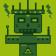

Typed the skeleton from memory, then added one element at a time, saving and refreshing after each one.
vim index.html → i → typed it letter-by-letter so my
fingers learn the shape:
<!DOCTYPE html>
<html>
<head>
<title>About Me</title>
</head>
<body>
</body>
</html>:w → refresh browser → next element. Here's the final body:
<h1>Penn</h1>
<p>I run Linux as my daily driver, paint Necrons on weekends,
and chase milliseconds in games I'm definitely not good at yet.</p>
<img src="imotekh.svg" alt="Imotekh the Stormlord — Phaeron of the Sautekh Dynasty">
<a href="https://www.goonhammer.com">Goonhammer</a>
<ul>
<li>Linux</li>
<li>Speed Running</li>
<li>Audio Acoustics</li>
</ul>※ Every Imotekh image online is either watermarked or 404. Drew my own 64×64 pixel sprite in the Game Boy palette. More on-brand anyway.
I run Linux as my daily driver, paint Necrons on weekends, and chase milliseconds in games I'm definitely not good at yet.

— Imotekh the Stormlord, Phaeron of the Sautekh Dynasty
emmet-vim sitting in my plugins; it would expand ! + Ctrl-y,, into the whole skeleton. Didn't load it. Typing's the point.<img> with a broken src just shows the alt text plus a placeholder icon — alt text isn't optional, it's the safety net.<a> link to Goonhammer is blue + underlined by default. Same color as the page from Ex 1 — that's the browser's user-agent stylesheet, not anything I did.index.html